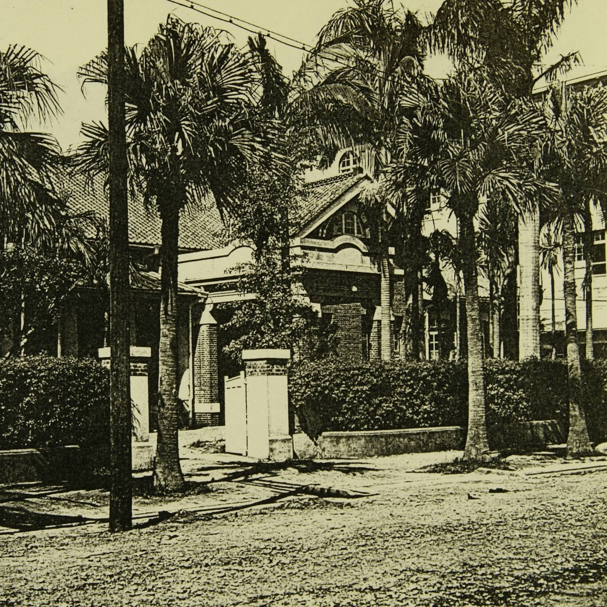

仕上工場
🍃🍃台灣農林公司創立於1899年，前身為「日本三井物產株式會社」，為延續三井物產原有的山林製腦事業，三井家族再於1909年合資成立「三井合名會社」，專為開發臺灣豐富的山林利益而來，日據時代三井合名會社台灣出張所，即三井合名會社在台總部(台北分公司)，當時所在地為台北市築地町（今武昌街二段電影街一帶），主要工作有製茶、造林、採藤、製材、製炭等山地事務，作業區域分布於海山、大溪一帶。
🍃🍃位於總部旁的「臺北仕上工廠」為精製茶工廠，配備有最先進的製茶設備，以及自動扶梯、電梯等機械設備，三井全臺各地的粗製茶工廠約兩百七十萬磅粗製茶，全都要送到此處進行加工、包裝，完成最後的出廠作業。